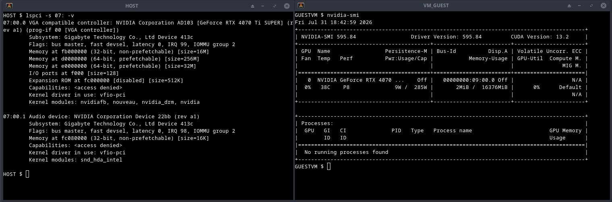
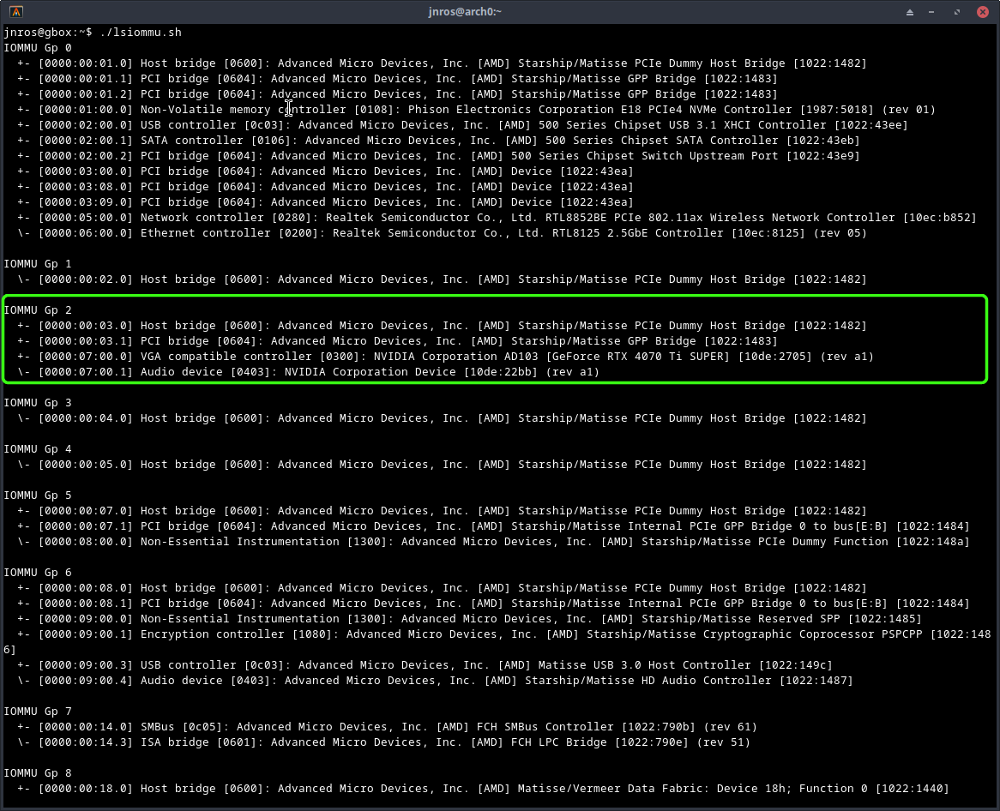
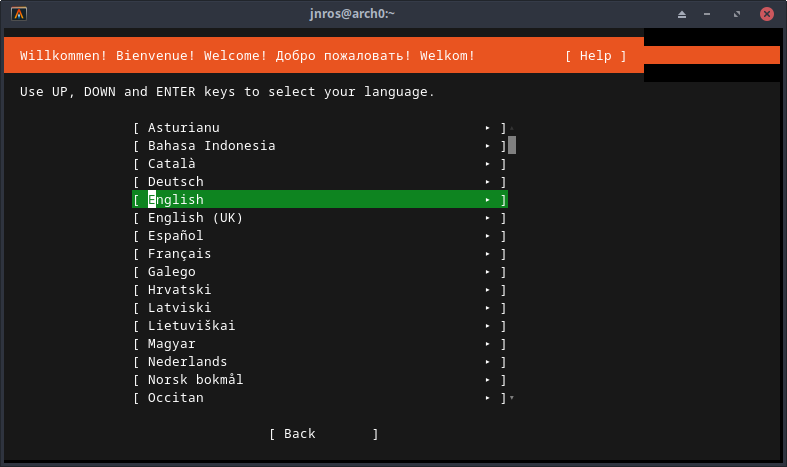
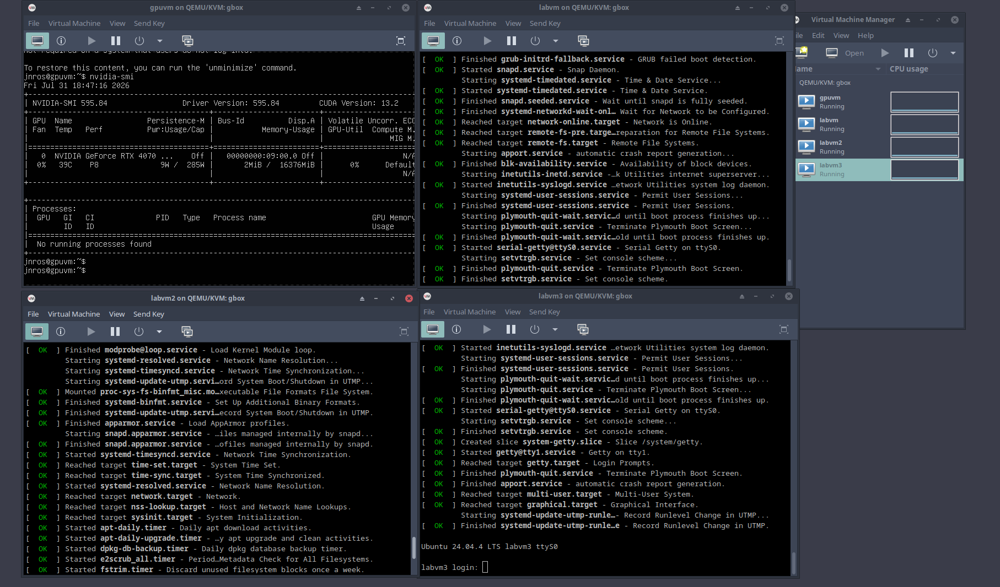

GPU Passthrough: VFIO, IOMMU, and Thermal Debug
Full build log: passing an NVIDIA RTX 4070 Ti SUPER through to a KVM guest on an AMD host, headless, start to finish. Part 6 describes my first brush with thermal calamity.
Result: The host claims both NVIDIA PCI functions with vfio-pci; the Ubuntu guest sees the physical RTX 4070 Ti SUPER, loads the open NVIDIA driver, and runs CUDA.

vfio-pci, guest driving the card.Tested on: AMD (ASUS board), Ubuntu Server 24.04 host (kernel 6.8.0-134), Ubuntu Server 24.04 guest (kernel 6.8.0-136), NVIDIA [RTX 4070 Ti SUPER], driver 595.84.
0. Before you start
Two checks that will save you a weekend:
- IOMMU groups. The GPU must sit in a group you can hand over whole. Check this before buying hardware.
- RMRR reservations. If firmware has reserved a memory region covering the GPU, DMA mappings will never succeed and no amount of config will fix it. Watch for
DMARandRMRRindmesg. Consumer laptops are especially prone to this.
General guidance: AMD boards are friendlier than Intel for this. Older GPUs are friendlier than new ones. And disable the GUI on the host. Better yet, don't even install NVIDIA drivers on the host.
1. BIOS
SVM Mode — enable. IOMMU / AMD-Vi — set to enable, not auto. CSM — enable.
2. Host: enable IOMMU
Add kernel boot arguments in GRUB:
amd_iommu=on iommu=ptUpdate grub, reboot, verify:
sudo dmesg | grep -i -E "iommu|dmar"
ls /sys/kernel/iommu_groupsIf /sys/kernel/iommu_groups is populated, IOMMU is live.
3. Host: identify the device and its group
Walk the sysfs tree to map groups to devices. The GPU must be isolated in its group — a group containing the GPU plus a NIC or system-level device cannot be passed through.

+- [0000:00:03.0] Host bridge [0600]: AMD Starship/Matisse PCIe Dummy Host Bridge [1022:1482]
+- [0000:00:03.1] PCI bridge [0604]: AMD Starship/Matisse GPP Bridge [1022:1483]
+- [0000:07:00.0] VGA compatible controller [0300]: NVIDIA AD103 [GeForce RTX 4070 Ti SUPER] [10de:2705] (rev a1)
\- [0000:07:00.1] Audio device [0403]: NVIDIA Device [10de:22bb] (rev a1)Two NVIDIA functions (VGA + companion audio) = one card, and both must be passed. The host bridge and PCI bridge entries can be safely ignored. Record the vendor:device hex pairs — here 10de:2705 and 10de:22bb. VFIO needs them.
4. Host: drop to text mode
sudo systemctl set-default multi-user.target
sudo rebootTo restore the GUI later: sudo systemctl set-default graphical.target.
5. Host: bind vfio-pci
/etc/modprobe.d/vfio.conf:
options vfio-pci ids=10de:2705,10de:22bb/etc/modprobe.d/blacklist-nouveau.conf:
blacklist nouveau
options nouveau modeset=0/etc/initramfs-tools/modules — append:
vfio
vfio_iommu_type1
vfio_pci
vfio_virqfdRebuild and reboot:
sudo update-initramfs -u -k all
sudo rebootIf your console is a monitor attached to that GPU, the display will go dark partway through boot. This is expected. Last visible line is typically VFIO - User Level meta-driver version: 0.3. Reconnect over SSH and verify:
$ lspci -k -s 07:00.0
07:00.0 VGA compatible controller: NVIDIA AD103 [GeForce RTX 4070 Ti SUPER] (rev a1)
Subsystem: Gigabyte Technology Co., Ltd Device 413c
Kernel driver in use: vfio-pciKernel driver in use: vfio-pci is the goal state.
6. Host: the thermal bug
Symptom. Immediately after enabling VFIO: fan much louder, CPU ~74 °C at idle. Nothing in dmesg or journalctl.
Ruled out. Cooler mounting (BIOS temps stable). Governor / frequency scaling. Interrupt storm. CPU stuck at boost.
Clue. systemd-udevd conspicuously busy on an idle headless server; kworker threads waking constantly.
Smoking gun.
$ sudo udevadm monitor --kernel --udev
add nvidia
remove nvidia
add nvidia
remove nvidia
...~10 times per second, indefinitely.
Proof. sudo udevadm control --stop-exec-queue → CPU 74 °C to 35–45 °C instantly. Fan quiet.
Cause. VFIO binding was correct throughout. Leftover Ubuntu/NVIDIA desktop automation was repeatedly attempting to initialize a GPU that VFIO had already claimed.
Fix.
sudo ln -sf /dev/null /etc/udev/rules.d/71-nvidia.rules
sudo systemctl mask --now nvidia-persistenced.service
sudo systemctl mask --now gpu-manager.service
sudo tee /etc/modprobe.d/vfio-blacklist-nvidia.conf >/dev/null <<'EOF'
blacklist nvidia
blacklist nvidia_drm
blacklist nvidia_modeset
blacklist nvidia_uvm
blacklist nvidia_peermem
blacklist nouveau
blacklist nvidiafb
EOF
sudo update-initramfs -u
sudo udevadm control --reload-rules
sudo udevadm control --start-exec-queueConfirm with udevadm monitor — it should stay silent.
7. Host: KVM and libvirt
sudo apt install \
qemu-kvm \
libvirt-daemon-system \
libvirt-clients \
virtinst \
bridge-utils \
ovmf \
cpu-checker
kvm-ok
sudo systemctl enable --now libvirtd
sudo usermod -aG libvirt $USER
sudo usermod -aG kvm $USERLog out, log back in, then verify with virsh list --all. An empty table (rather than a permissions error) is success.
8. Guest: headless install over serial
sudo virt-install \
--name labvm \
--memory 8192 \
--vcpus 4 \
--disk size=20,bus=virtio,format=qcow2 \
--location "/home/jnros/iso/ubuntu-24.04.4-live-server-amd64.iso,kernel=casper/vmlinuz,initrd=casper/initrd" \
--os-variant ubuntu24.04 \
--network network=default,model=virtio \
--boot uefi \
--graphics none \
--console pty,target_type=serial \
--extra-args "console=tty0 console=ttyS0,115200n8"When the terminal fills with kernel boot messages, the install is running. Minimal install + OpenSSH is sufficient.

Post-install, inside the guest:
ip a
ping -c3 google.com
sudo apt install qemu-guest-agent
sudo systemctl enable --now qemu-guest-agentConfirm you can SSH to the guest from the host before continuing.
9. Guest: attach the GPU
Secure Boot caveat. --boot uefi enables Secure Boot by default, which complicates NVIDIA passthrough. Remove it from the domain XML.
Add both functions as hostdev entries — you pass the group, not the device:
<!-- GPU passthrough -->
<hostdev mode='subsystem' type='pci' managed='yes'>
<driver name='vfio'/>
<source>
<address domain='0x0000' bus='0x07' slot='0x00' function='0x0'/>
</source>
</hostdev>
<hostdev mode='subsystem' type='pci' managed='yes'>
<driver name='vfio'/>
<source>
<address domain='0x0000' bus='0x07' slot='0x00' function='0x1'/>
</source>
</hostdev>On boot, the guest kernel arbitrates over a non-emulated card:
[ 0.930357] pci 0000:08:01.0: vgaarb: setting as boot VGA device
[ 0.933718] pci 0000:09:00.0: vgaarb: bridge control possible
[ 0.934690] pci 0000:09:00.0: vgaarb: VGA device added: decodes=io+mem,owns=none,locks=noneNote the address change: 07:00.0 on the host, 09:00.0 in the guest — the guest has its own PCI hierarchy.
10. Guest: NVIDIA driver
Blacklist nouveau inside the guest first:
cat <<EOF | sudo tee /etc/modprobe.d/blacklist-nouveau.conf
blacklist nouveau
options nouveau modeset=0
EOF
sudo update-initramfs -u
sudo rebootThen:
sudo apt update
sudo ubuntu-drivers devices # recommended: nvidia-driver-595-open
sudo apt install nvidia-driver-595-open
sudo rebootResult:
$ nvidia-smi
+-----------------------------------------------------------------------------------------+
| NVIDIA-SMI 595.84 Driver Version: 595.84 CUDA Version: 13.2 |
+-----------------------------------------+------------------------+----------------------+
| GPU Name Persistence-M | Bus-Id Disp.A | Volatile Uncorr. ECC |
|=========================================+========================+======================|
| 0 NVIDIA GeForce RTX 4070 ... Off | 00000000:09:00.0 Off | N/A |
| 0% 38C P8 6W / 285W | 2MiB / 16376MiB | 0% Default |
+-----------------------------------------+------------------------+----------------------+And lspci -vv -s 09:00.0 inside the guest reports Kernel driver in use: nvidia, full BARs (16 MB / 256 MB / 32 MB), FLReset+, and AER capability — a real device, not an emulated one.
Note on link speed. Idle output shows LnkSta: Speed 2.5GT/s (downgraded), Width x16 against a 16 GT/s LnkCap. This is a low-power link state on an idle card, not a passthrough defect; it trains up under load.
Troubleshooting quick reference
| Symptom | Likely cause |
|---|---|
| Display goes dark during host boot | Expected once vfio-pci claims the GPU. Use SSH. part 5 |
| Host fan loud / high idle temp after VFIO | udev/NVIDIA claim loop. part 6 |
Kernel driver in use: nouveau after reboot |
Blacklist not applied, or initramfs not rebuilt. |
| Kernel hangs on reboot | Fall back to a known-good boot entry; check dmesg / journalctl. |
| GPU visible but DMA failures | Check for RMRR / DMAR reservations — may be unfixable on that hardware. part 0 |
| Guest won't load NVIDIA driver | Secure Boot still enabled in the domain XML. part 9 |
| IOMMU group contains unrelated devices | Platform limitation; try a different slot or board. part 3 |
